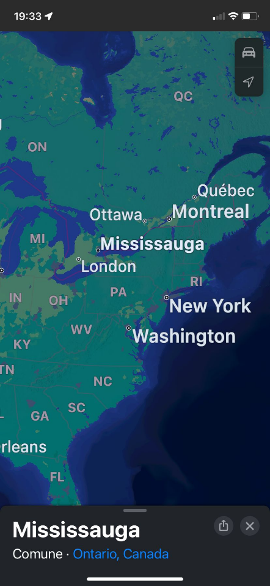

1) da che parte dell'Italia venite?
2) quando siete arrivati in Canada?
3) come siete arrivati?
4) chi siete andati?
5) perché siete andati?
6) siete contenti di essere in Canada?
7) che lavoro avete fatto in Italia? e in Canada?
8) conoscevate la lingua?
9) avete trovato difficoltà a spostarvi quando eravate in Canada?
10) cosa c'è di diverso tra Canada e Italia?
11) dove siete atterrati con l'aereo?
12) come siete arrivati a (non so dove siano)
13) perché siete contenti di vivere in Canada?
14) avevate già qualche amico in Canada?
1 da Santa Maria hoe provincia di Lecco Lombardia
2 siamo arrivati in Canada nel 2004
3 siamo arrivati in aereo
4 Marcello, la moglie è un bambino piccolo di 5 mesi
5 per lavoro. La mia ditta mi ha proposto un progetto da sviluppare nella sede canadese
6 siamo molto contenti , ci troviamo molto bene anche se alcune volte ci manca l’Italia è i nostri parenti
7 in Italia facevo l’ingegnere in una società di impianti siderurgici. In Canada sono amministratore delegato della società tenova che si occupa di import -export di metalli. Mi moglie non lavora perché si occupa della casa e dei figli non avendo aiuto dai parenti che sono sono lontani
8 io parlavo abbastanza bene l’inglese mentre mia moglie lo ha dovuto imparare li
9 dopo i primi tempi di assestamento ci siamo organizzati e abbiamo comprato un’auto. Comunque la mia città Mississauga e’ ben organizzata con i mezzi pubblici
10 il Canada è molto ben organizzato, c’è molto rispetto per le regole perché se sgarri sono pene severe. Ci sono molte usanze che in Italia non ci sono per esempio se non usi deve vestiti o altre cose l’emetti fuori dal cancello e chi passa e ha bisogno lo prende
11 siamo atterrati a Toronto che dista circa 25 km dalla nostra città
12 la prima volta abbiamo preso un taxi poi ci siamo mossi con i mezzi pubblici
13 Perché ci siamo molto ben ambientati , ormai abbiamo tutti gli amici qui e la nostra vita si svolge serenamente
14 no non avevamo amici e non conoscevamo nessuno. All’inizio non è stato facile sopratutto per mia moglie perché non conosceva la lingua e non aveva amici ma poi piano piano abbiamo creato un buon giro di amicizie
